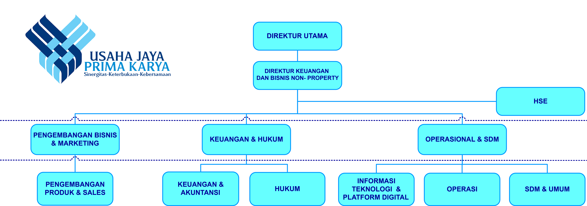

<!-- About Section -->
 <link rel="stylesheet" href="css/style.css">

 <!-- Navbar Start -->
<nav class="navbar">
    <a href="#" class="navbar-logo">PT Usaha Jaya Prima <span> Karya </span> </a>

    <div class="navbar-nav">
    <a href="index.html">Home</a>
    <a href="about_me.html">About Me</a>
     <a href="visi_misi.html">Visi Misi</a>

    <!-- SERVICE DROPDOWN -->
    <div class="nav-item service">
    <a href="#" class="service-link">Service ▼</a>
    <ul class="drop-down">
      <li><a href="organisasi.html">ORGANIZATION & HUMAN RESOURCE DEVELOPMENT</a></li>
        <li><a href="administrasi.html">JASA ADMINISTRASI PERKANTORAN </a></li>
        <li><a href="kontruksi.html">JASA KONTRUKSI DAN DESAIN INTERIOR</a></li>
        <li><a href="pengadaan.html">JASA PENGANDAAN BARANG (PROCUMENT)</a></li>
        <li><a href="tenaga_pengaman.html">JASA TENAGA PENGAMAN DENGAN APLIKASI DIGITAL</a></li>
        <li><a href="building.html">JASA BUILDING MANAGEMENT</a></li>
        <li><a href="penyewaan_barang.html">JASA PENYEWAAN KENDARAAN, ELECTRIK VEHICLE BERIKUT PENGEMUDI</a></li>
    </ul>
</div>
    <a href="news.html">News</a>
    <a href="contact.html">Contact</a>
</div>


    <div class="navbar-extra">
        <a href="#" id="hamburger-menu"><i data-feather="menu"></i></a>
    </div>
</nav>
<section id="about" class="about-company">
    <h2>Tentang Kami</h2>
    <div class="about-wrapper">
         
    <div class="about-profile">
        
        <h3>Lala Arief Fadila</h3>
        <span>Direktur Utama</span>
    </div>

        <div class="about-text">
            <p> PT USAHA JAYA PRIMA KARYA (PT UJPK) berkedudukan di Jakarta Selatan,
                yang didirikan dengan akte Notaris Retno Rini Purwaningsih Dewanto SH.,
                No. 8 Tanggal 8 April 2003, dan sudah dilakukan beberapa kali perubahan 
                dan ditambah, yang terakhir dengan akte Notaris Retno Rini Purwaningsih 
                Dewanto SH. No. 11 Tanggal 16 Juli 2020 yang telah disahkan oleh Menteri
                Hukum danHakAsasiManusia RI.
            </p>
            <p>Dengan Surat Keputusan Nomor: AHU-AH.01.03-0296183 Tanggal 20 Juli
                2020. Saham PT Usaha Jaya Prima Karya dimiliki Oleh Yayasan Pendidikan dan
                Kesejahteraan PT PLN (Persero) sebesar 90,47% dan Koperasi Pegawai PLN Pusat
                (KP3) sebesar 9,53%,dengan demikain saham mayoritas dimiliki oleh YPK-PLN.
            </p>
    </div>
        </div>
    </div>
    <hr class="about-line">

     <div class="struktur-organisasi">
            <h2>Struktur Organisasi</h2>
        <div class="struktur-img">
            
        </div>
</section>


<!-- Footer Start-->
 <footer>
    <div class="sosial">
    <a href="#"><i data-feather="instagram"></i></a>
    <a href="#"><i data-feather="facebook"></i></a>
    </div>

    <div class="links">
        <a href="#home">Home</a>
        <a href="#about">Tentang Kami</a>
        <a href="#News">News</a>
        <a href="#contact">Kontak</a>
    </div>

    <div class="credit">
        <p>Created by <a href="">sandhikagalih</a>. | &copy; 2026.</p>
    </div>
 </footer>
<!-- Footer end-->